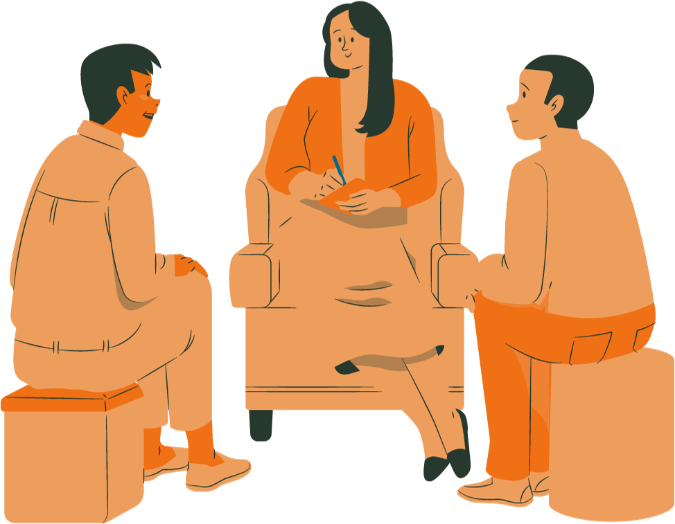

Do you have a community project idea that needs funding?
Are you a passionate young Canadian between the ages of 15-29 with a desire to make a positive impact in your community? The Helping Hands ChangeMakers Micro Grant Program is your chance to turn your ideas into action, create lasting change and contribute to a more inclusive and volunteer-driven Canada. We are distributing 20 micro grants up to $5,000 per project to individuals and groups who have a community project idea in need of funding.

Change Makers Micro-grant Program
- Up to $5,000 in funding
- Mandatory training sessions and mentorship provided by Helping Hands for youth participants
- Youth participants can gain valuable experience, recognition, and long-term connections from this program
$1,000
For small scale ideas that can be implemented by yourself or with a partner. Examples include:- Community Garden
- Youth Art Workshop
$3,000
For medium scale ideas. You must apply for this grant with a minimum of 2 other team members. Examples include:- Local Arts Festival
- Job Fair
$5,000
For large scale ideas. You must apply for this grant with a minimum of 2 other teams members. Examples of large scale ideas include:- Sporting Event
- Mental Health Support Programs
For any questions, please email support@helpinghandsapp.com
FAQ
- Applicants must complete and submit the official Helping Hands Change Makers Micro Grant Program application form
- Applications will be accepted on a rolling basis until funds run out
- Incomplete applications will not be considered
- Apply using the link here
To be eligible for the Micro-Grant Program, applicants must meet the
following criteria:
- Be a Canadian citizen or a permanent resident of Canada
- Be between the ages of 15-29 at the time of application
- Have a NEW project or initiative; we do not fund ongoing projects/businesses
- Demonstrate a strong passion for addressing a community or social issue
- Commit to attending three virtual training sessions
- Commit to participating in 1 in-person youth forum
- Be willing to incorporate youth volunteers into their project
- This grant can not be used for starting a business
- Be sure to fulfill all mandatory requirements
- Funds must be used for project-related expenses, such as materials, equipment, and stipends for youth volunteers.
- You may not spend the funding on the following:
-
- Admin/Overhead Costs
- Subscriptions/Memberships
- Controlled Substances
- Alcoholic Beverages
- Salaries
- Staffing
- Grants awarded through the Micro-Grant Program may vary, depending on the project's scope and budget.
- Applicants must submit a detailed budget outlining how the funds will be used.
- Grant funds will be disbursed as a one time payment with a 10% hold back until all receipts have been submitted to Helping Hands.
- No, funding can only be used to fund new projects, ideas, or initiatives
- If you are a current group, you may still apply for funding but it cannot be used to fund ongoing projects/activities
- The program supports projects that address community or social issues in Canada. The projects should be designed to make a positive impact and align with the program's goals of inclusivity and volunteer service.
- Yes, participants are required to submit regular progress reports, including financial reports, to program administrators. This helps track the progress of your project and ensures transparency and accountability.
Important Dates and Deadlines
Round 3 Grant writing workshop
March 31st 2025, 5pm
Round 3 application opens
April 7th 2025
COHORT 5:
June - October
COHORT 6:
October - February